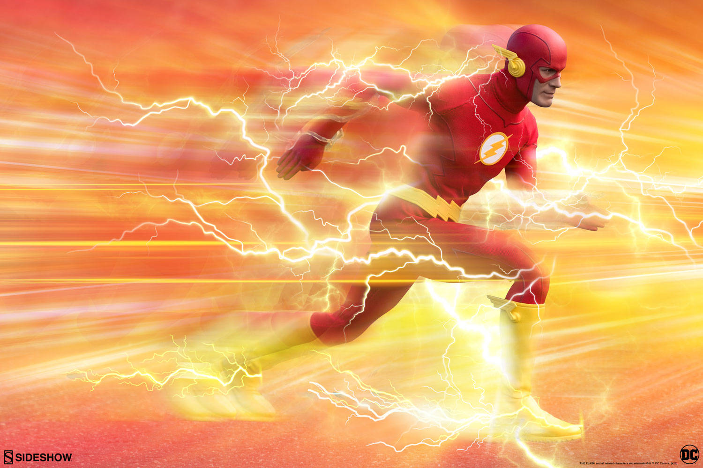

Perfil
Soy un profesional responsable, con experiencia en atención al cliente y seguridad. Actualmente estudio Ingeniería en Sistemas y me especializo en tecnología y soporte técnico.
Carrera
- Estudiante 5to semestre Ingeniería en Sistemas
- Experiencia en Call Center - Viajes Felices
- Guardia de Seguridad en empresa privada
- Vendedor técnico en tienda de tecnología
Experiencia Laboral
-
Viajes Felices – Atención al cliente (Call Center)
Período: 2022
Atención telefónica, soporte y orientación a clientes. -
Guardia de Seguridad
Período: 2023
Responsabilidades en vigilancia y control de accesos. -
Tienda de Tecnología – Asistente de ventas
Período: 2024 - Actualidad
Atención al cliente y manejo de inventarios.
Educación
-
Nicolás Guillén
-
Colegio Gonzalo Escudero
-
Universidad UTM
Contacto
Teléfono: 0979 92 65 52
Correo institucional: opinzon@utm.edu.ec
Habilidades
-  Manejo con clientes
- Atención al cliente
- Habilidades técnicas en computación
- Rapidez para gestionar problemas
- Trabajo en equipo
- Resolución de conflictos
- Puntualidad
Siempre cumplo con mis horarios y responsabilidades.
Debilidades
- A veces soy muy perfeccionista
- Me cuesta delegar tareas
- Impaciencia en algunos procesos largos
Comida Favorita
- Me encanta la comida tradicional ecuatoriana, especialmente el ceviche y el encebollado.